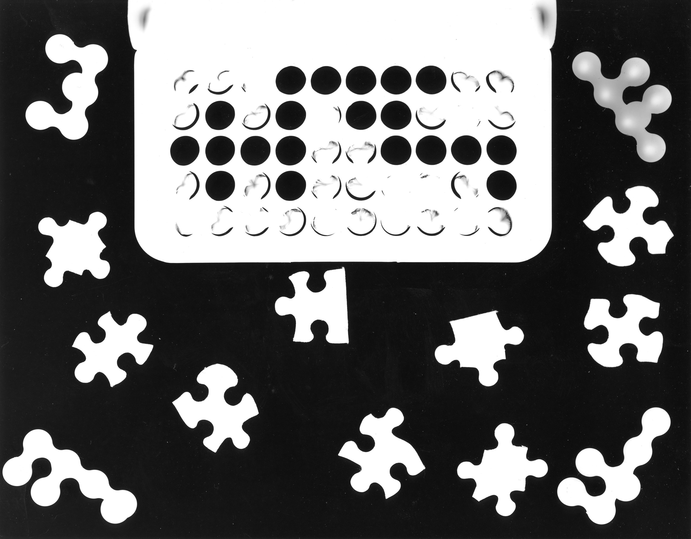
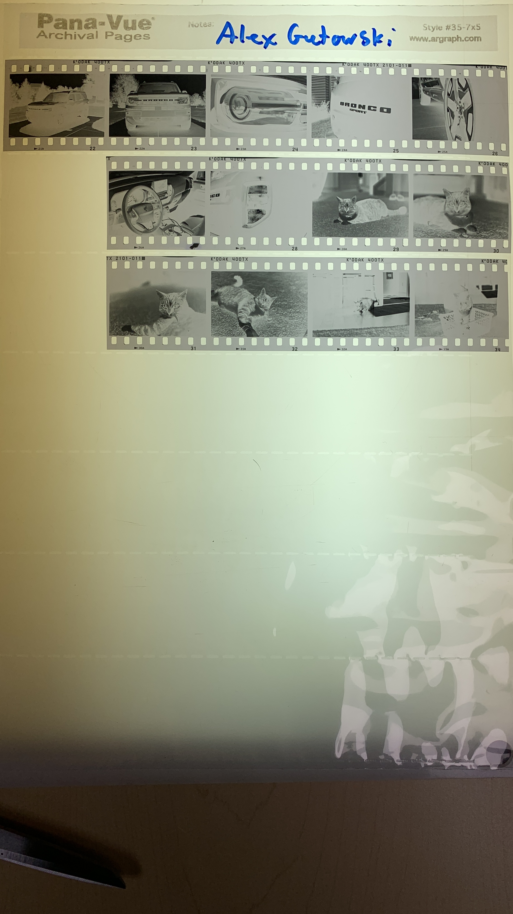
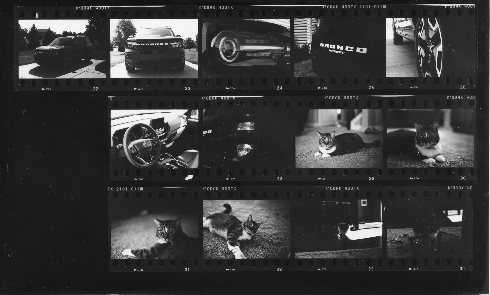
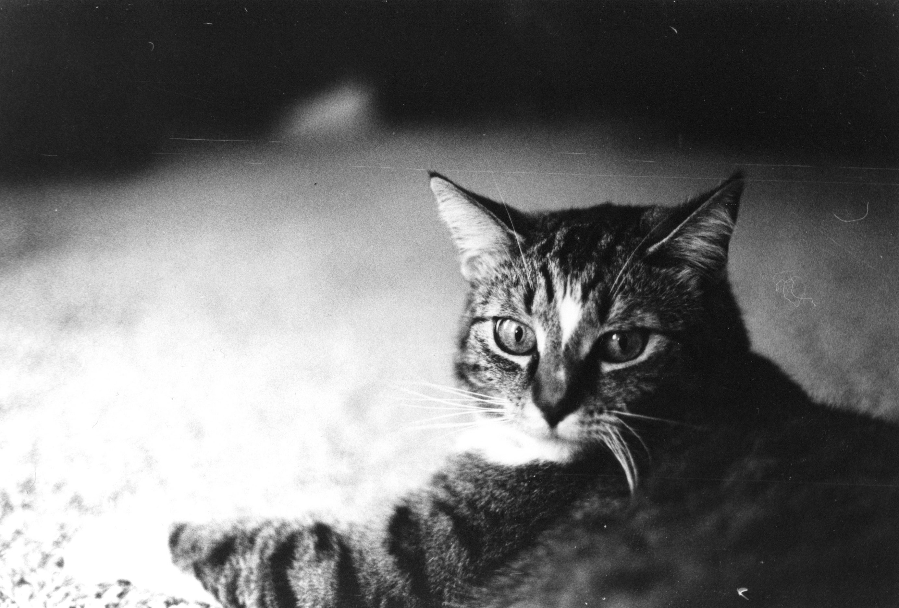

Photogram
The photogram assignment was a great way to introduce us to the darkroom and get a feel for the class. We learned how blocking the light can make different things on the page, because that part of the page isn't exposed to light.
Light & Form Project
Negatives
Contact Sheet
Final Enlargement
This first assignment was a really great introduction to darkroom photography. It let us be creative with our cameras, it let us learn about film, how to develop it, how to create contact prints, how to make enlargements, and most importantly, how to be safe while doing it.
I learned the history of photography, which was pretty interesting. I don't really feel like typing all of it out here, but check out this link to see a timeline I made.
I have learned a lot about my camera, I got a 42/43 on the camera quiz, not just how to take pictures, but how the camera actually works internally. The camera is definetly a tool for me, not a roadblock.
I have learned so much information about producing film. The entire film developing process is complicated, but fun. I understand that the developer makes the image appear on the film, the stop stops the developer from developing, the fix makes it so it's no longer sensitive to light, the rinse cleans off all the chemicals, the hypoclear helps to rinse off the last little bit of chemical, and the photoflow helps remove water spots from the film. There are many things that can go wrong. Here is a document that shows an issue I had with my film.
Creating a contact sheet involves placing a piece of paper and the negatives into a contact printer. The negatives and the paper must be in contact otherwise they won't work. Make sure to do a test strip, so you can determine the correct exposure.